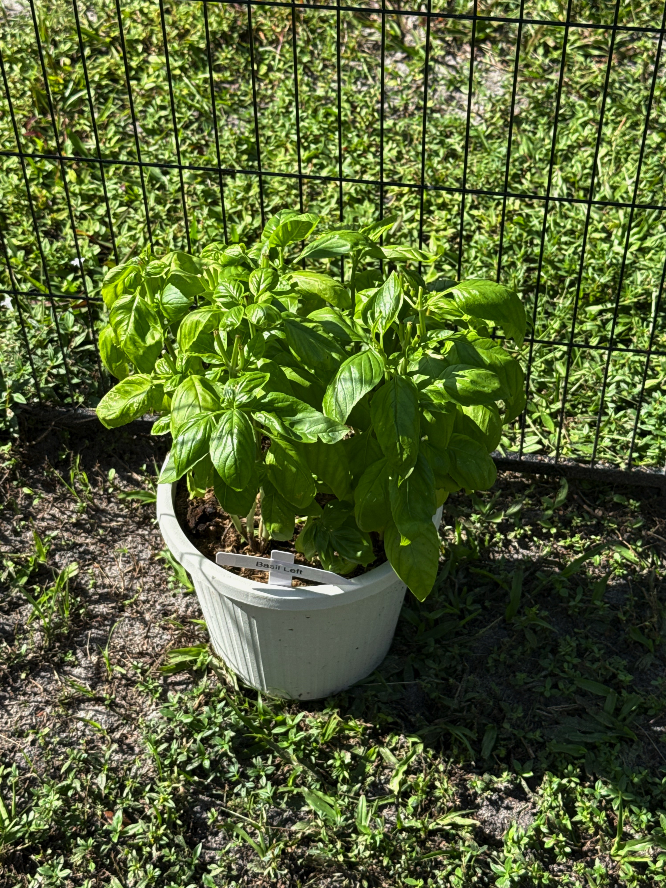
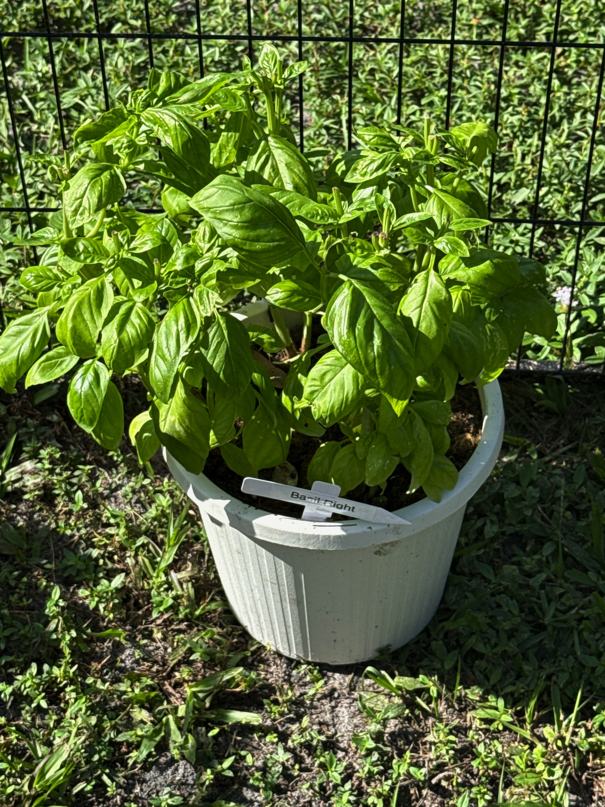
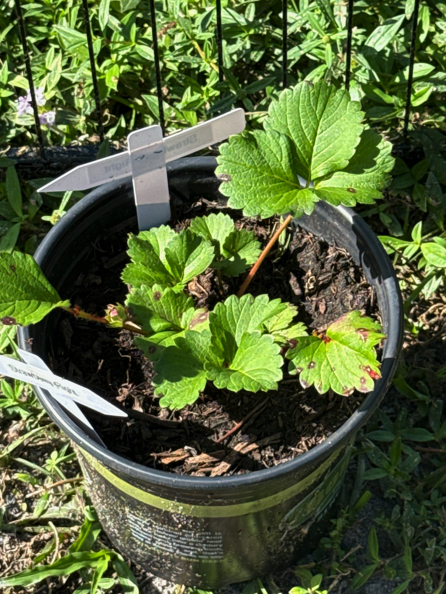
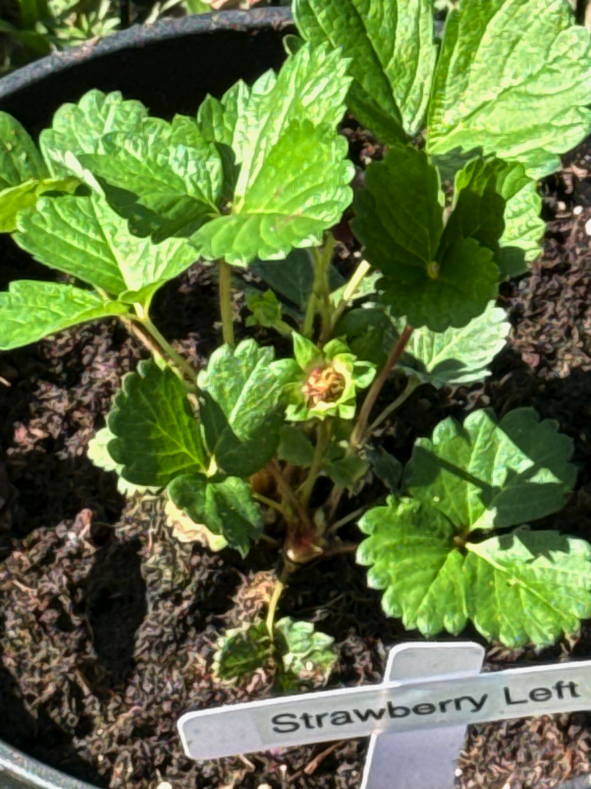
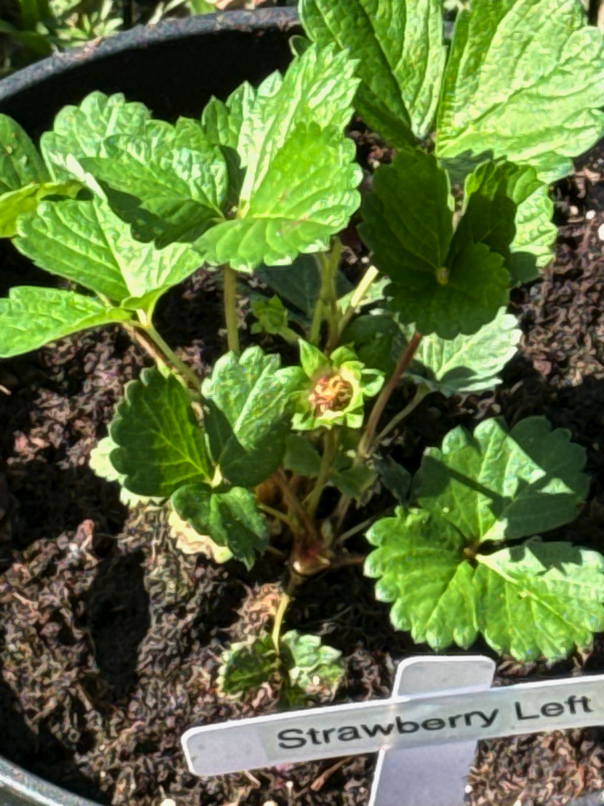
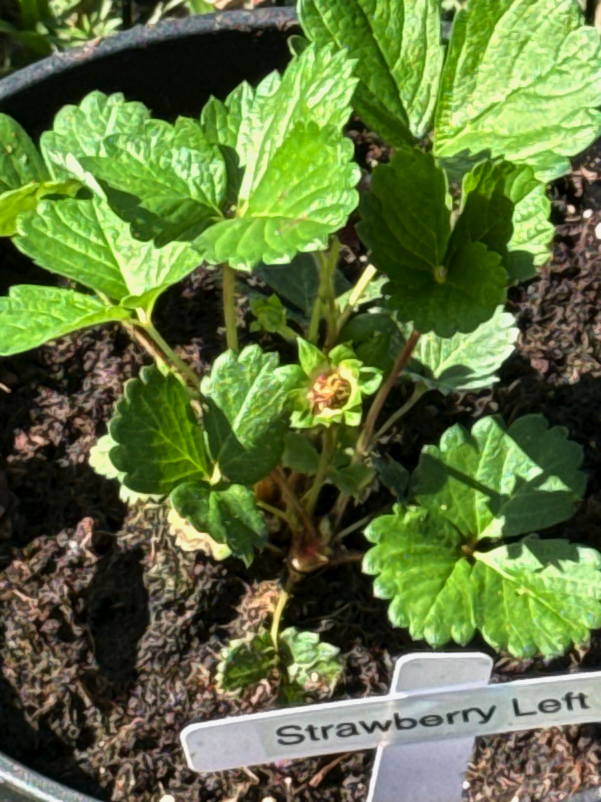
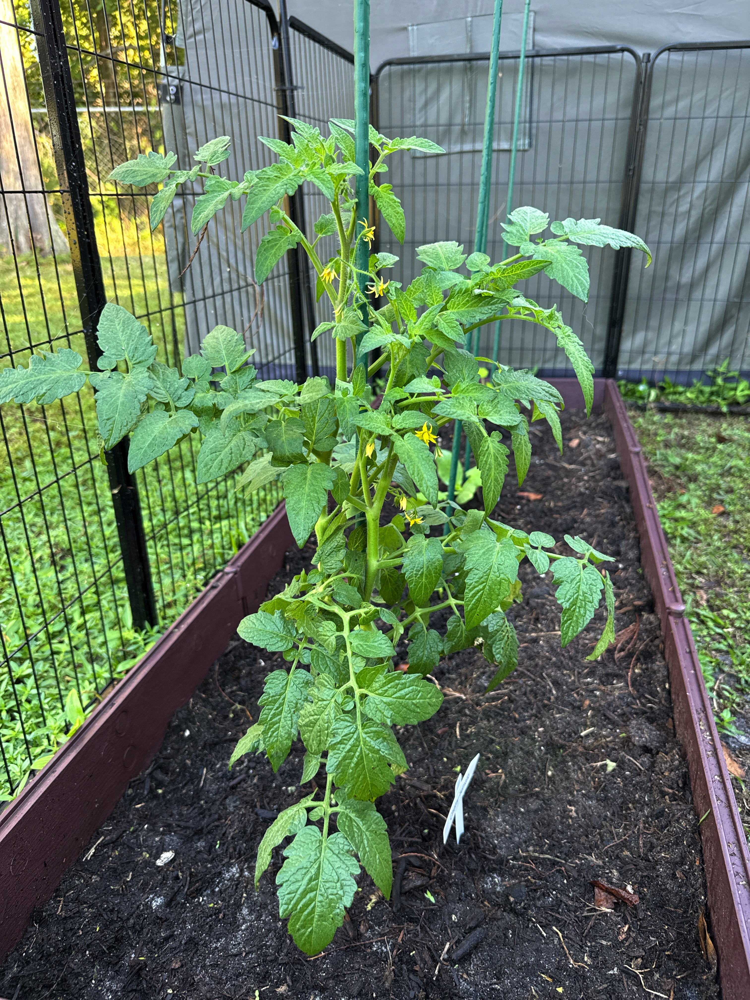

🌿Daily Journal
Date: Friday, November 7, 2025 • Panels 1–18 (left → right); Stakes 1–4 within the raised bed
📝Summary of Activities
- Morning inspection of all plants
- Watered basil and strawberry plants
- Photographed all panels and stakes
☀️Weather / Sun Conditions
- Temperature: 58°F – 75°F
- Conditions: Sunny and clear
- Sun: Sunrise 0653, Sunset 1745
- Notes: Panels 1-4 in partial shade until 8am
📝General Observations
- All plants looking healthy
- Soil moisture good across all containers
- No pest activity visible
❓Questions & Answers
Q: Should I start fertilizing the tomato plant?
A: Wait until you see the first flowers forming, then start with a diluted 10-10-10 fertilizer at half strength every 2 weeks.
🪴Plant by Plant
Each entry lists container and care notes, followed by photos (if available)
Panel 1 — Basil Left
- Container: 8" white round pot, 0.94 gal
- Soil Mix: Miracle-Gro Moisture Control
- Current Stage: Vegetative growth
- Next Stage: Ready for harvest
- Notes: Healthy, compact growth. No issues observed.


Panel 4 — Strawberry Original
- Container: 2.32 qt black pot
- Soil Mix: Original potting soil + topsoil fill
- Current Stage: Flowering
- Next Stage: Fruit development
- Notes: Multiple blooms present. Plant responding well to larger pot.
Q: How many flowers should I keep?
A: For a young plant, keep 2-3 of the strongest blooms. Remove weaker flowers so the plant focuses energy on fewer, larger berries.

 


🥕Raised Bed — Panels 16–18
Stake 1 — Cherry Tomato
- Soil Mix: Topsoil + sand
- Current Stage: Early flowering
- Next Stage: Fruit set
- Notes: Multiple flower clusters visible. Healthy green foliage. Tied to stake.

Stake 3 — Zucchini (direct-sown)
- Soil Mix: Topsoil + sand
- Current Stage: Vegetative growth
- Next Stage: Continued growth
- Notes: Largest direct-sown zucchini. Steady growth, healthy leaves.